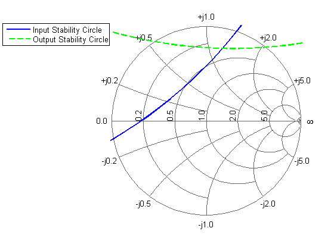
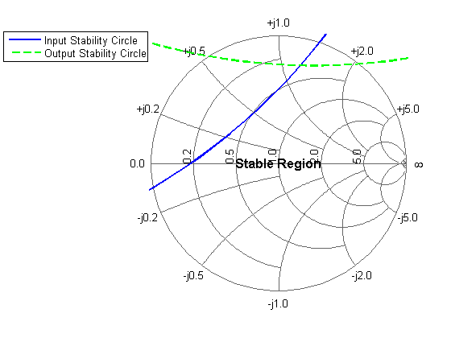
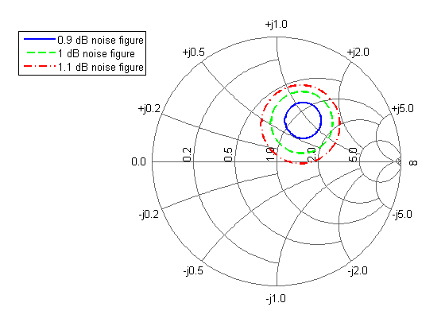
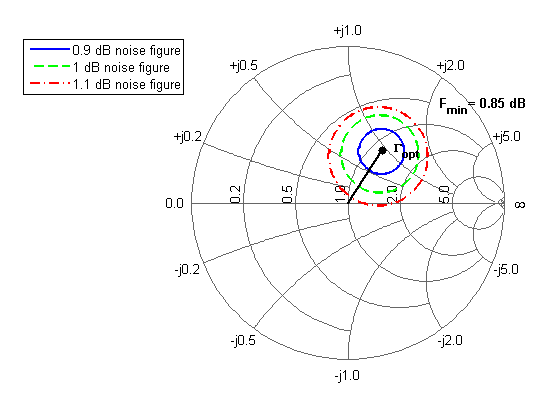

The RF Toolbox has a variety of options for the visualization of RF data. This demo focuses on the Smith chart and first highlights the use of the Smith chart for investigating the stability regions of an amplifier. Then, the constant noise figure circles of an amplifier are visualized.
First, we define the S-parameters for the amplifier by reading in data from a file and then analyzing it in frequency domain at the operating frequency 2GHz.
hckt = rfckt.datafile; set(hckt, 'File', 'samplebjt1.s2p'); freq = 2e9; analyze(hckt, freq)
For convenience we extract the S-parameters from the circuit object and deal each S-parameter into its own variable.
s_params = get(get(hckt,'RFdata'),'S_Parameters'); [s11, s12, s21, s22] = ... deal(s_params(1,1), s_params(1,2), s_params(2,1), s_params(2,2));
Now we calculate the radius and center of the input stability circle based on the S-parameters at 2GHz.
delta = s11*s22-s12*s21; radius = abs(s12*s21/(abs(s11)^2-abs(delta)^2)); center = conj(s11-conj(s22)*delta)/(abs(s11)^2-abs(delta)^2);
Using the radius and center we calculate points on the circle.
theta = [0:.01:2]*pi; incirc = radius*exp(j*theta)+center;
Similarly, we calculate the radius and center of the output stability circle and use the radius and center to calculate points on the circle.
radius = abs(s12*s21/(abs(s11)^2-abs(delta)^2)); center = conj(s22-conj(s11)*delta)/(abs(s22)^2-abs(delta)^2); outcirc = radius*exp(j*theta)+center;
Using these points, we plot the input and output stability circles on the Smith chart.
smithchart; hold on hl1 = plot(incirc, 'b-', 'LineWidth', 2); hl2 = plot(outcirc, 'g--', 'LineWidth', 2); legend([hl1 hl2], 'Input Stability Circle', 'Output Stability Circle', ... 'Location','NorthWestOutside');
The magnitudes of s11 and s22 are both less than unity. As a result, the center of the Smith chart represents a stable operating point. We label the Smith chart accordingly.
text(0, 0, 'Stable Region', 'HorizontalAlignment', 'center', ... 'FontSize', 12, 'FontUnits', 'normalized', 'FontWeight', 'Bold'); hold off
We start with the amplifier noise parameters measured at 2GHz.
FmindB = 0.8457; Fmin = 10.^(FmindB/10); gammaOpt = 0.4030*exp(j*pi*56.9641/180); rn = 0.2179;
We will draw constant noise figure circles for noise figures at increments of 0.05, 0.15, and 0.25 dB above the minimum.
FdB = FmindB+[0.05 0.15 0.25]; Fmin = 10.^(FmindB/10); F = 10.^(FdB/10);
We calculate the radius and center of the constant noise figure circles based on the defined noise parameters.
N = abs(1+gammaOpt)^2*(F-Fmin)/(4*rn); radius = sqrt((1-abs(gammaOpt)^2)*N+N.^2)./(1+N); center = gammaOpt./(1+N);
Using the radius and center of the constant noise figure circles we calculate points on each of the circles.
circ1 = radius(1)*exp(j*[0:.01:2]*pi)+center(1); circ2 = radius(2)*exp(j*[0:.01:2]*pi)+center(2); circ3 = radius(3)*exp(j*[0:.01:2]*pi)+center(3);
Using these points, we plot the constant noise figure circles on the Smith chart.
smithchart; hold on hl1 = plot(circ1, 'b-' , 'LineWidth', 2); hl2 = plot(circ2, 'g--', 'LineWidth', 2); hl3 = plot(circ3, 'r-.', 'LineWidth', 2); legend([hl1 hl2 hl3], ... [num2str(FdB(1),2) ' dB noise figure'],... [num2str(FdB(2),2) ' dB noise figure'],... [num2str(FdB(3),2) ' dB noise figure'], ... 'Location','NorthWestOutside');
We plot the location of the minimum noise figure as well. All constant noise figure circles have their centers located along the line connecting the center of the Smith chart and this point.
plot([0 real(gammaOpt)], [0 imag(gammaOpt)], 'k', ... real(gammaOpt), imag(gammaOpt), 'k.', ... 'LineWidth', 2, 'MarkerSize', 20); text(max(real(circ3)),max(imag(circ3)), ... [' F_{min}= ' num2str(FmindB,2) ' dB'], 'FontSize', 10, ... 'FontUnits', 'normalized', 'FontWeight', 'Bold'); text(real(gammaOpt), imag(gammaOpt), ... ' \Gamma_{opt}', 'FontSize', 10, ... 'FontUnits', 'normalized', 'FontWeight', 'Bold'); hold off